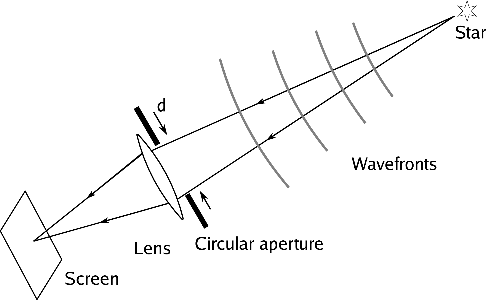

Chapter 1
Making fringes

Figure 1.1:
A telescope focussing the light from a point source of light (e. g.a star) on to a screen. The telescope is represented as a perfect lens with a circular aperture of diameter d in front of it. SVG file:
telescope-star.svgFigure 1.2: The diffraction-limited intensity pattern (known as the "Airy disc") seen on the screen in the focal plane of the telescope in Figure
1.1 (left) and a cut through the intensity pattern (right). SVG file:
airy1.svgFigure 1.3:
Patterns seen in the focal plane of a telescope when pairs of stars of different separations ∆θ are observed through a telescope. Python file:
airy-overlap.pyFigure 1.4:
A simple long-baseline interferometer constructed out of plane (flat) mirrors. Some of the mirrors have been included to maintain certain symmetries of the optical path - these symmetries are explained in section . SVG file:
longbaseline-schematic.svgFigure 1.5: A simplified model of fringe formation in an interferometer. SVG file:
delay-model.svgFigure 1.6:
(a) Beams of starlight arriving at angles of ±β on a detector. (b) The fringe pattern on the detector (c) A 1-dimensional cut through the fringe pattern. SVG file:
beams-on-detector.svgFigure 1.7: Geometry of the relative path lengths travelled by the beams arriving at the detector surface in Figure
1.6 as a function of the coordinate x. SVG file:
tilted-beams.svgFigure 1.8: Light arriving from two stars with separation ∆θ SVG file:
two-stars.svgFigure 1.9:
Geometry of the paths travelled by light beams from a distant star to two light collectors. The drawing is in the plane containing the vector baseline between the two collectors
→B
12 and the unit vector
→∧S pointing towards the star. SVG file:
baseline-2d.svgFigure 1.10:
Three-dimensional geometry for an interferometric observation, showing the vector baseline
→u=
→B/λ, the phase centre of the image
∧→S
0 and the offset σ. The (u,v,w) coordinate system of the baseline and the (l,m,n) coordinate system for the object are shown (the n coordinate is too small to be visible). The m coordinate points towards North Celestial Pole (NCP). SVG file:
baseline-3d.svgFigure 1.11: Greyscale representation of a 2-dimensional sine wave at spatial frequency
→u overlaid with a contour map of the brightness distribution of a binary star. The coherent flux is an integral of the product of the sine wave and the brightness distribution and so will "pick" up a binary star with this separation. SVG file:
sky-fringes-annotated.svgFigure 1.12: Two one-dimensional Gaussian brightness distributions plotted as a function of angular coordinate σ together with a cosine wave at frequency u (shown as a dotted line). The total flux F(0) of both Gaussians is the same but the coherent flux F(u) of the narrower Gaussian at frequency u is greater. Python file:
coherent-flux-integral.pyFigure 1.13:
Fringe patterns with the same average brightness but different visibilities. Python file:
fringecontrast.pyFigure 1.14: Point-source fringe patterns at multiple wavelengths (above) and their sum (below). Python file:
polychromatic.pyFigure 1.15: Spectral intensity patterns (left) and fringe patterns (right) for light with top-hat spectral bandpasses. The fringe envelope is a narrower, i. e.the coherence length is shorter, for the wider spectral bandpass. Python file:
coherence-length.pyFigure 1.16:
Geometry of the external light paths in a plane-parallel atmosphere and a horizontal interferometer, showing that all the optical paths in air are balanced. SVG file:
vacuum-delay.svgFigure 1.17: The refractivity μ = n−1 of dry air at 1 atmosphere and 20
° C at visible and near-infrared wavelengths. Python file:
refractivity.pyFigure 1.18: The group delay as a function of wavelength for 1 metre of dry air at 1 atmosphere and 20
° C. The group delay at 2.5 μ
mhas been subtracted to give a relative group delay. Python file:
groupdelay.py{kind=link}
{kind=link}
{kind=link}
{kind=link}
{kind=link}
{kind=link}
{kind=link}
{kind=link}
{kind=link}
{kind=link}
{kind=link}